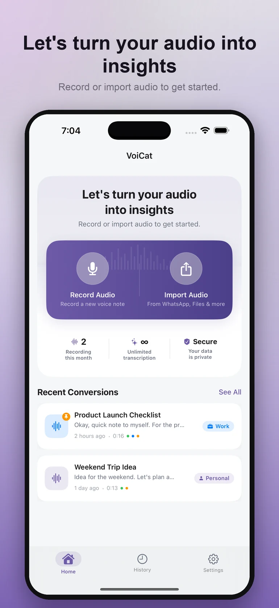
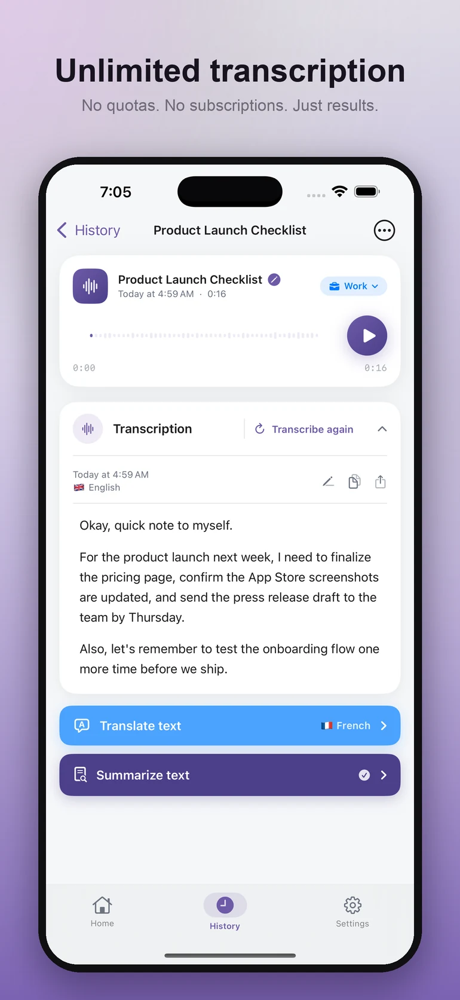
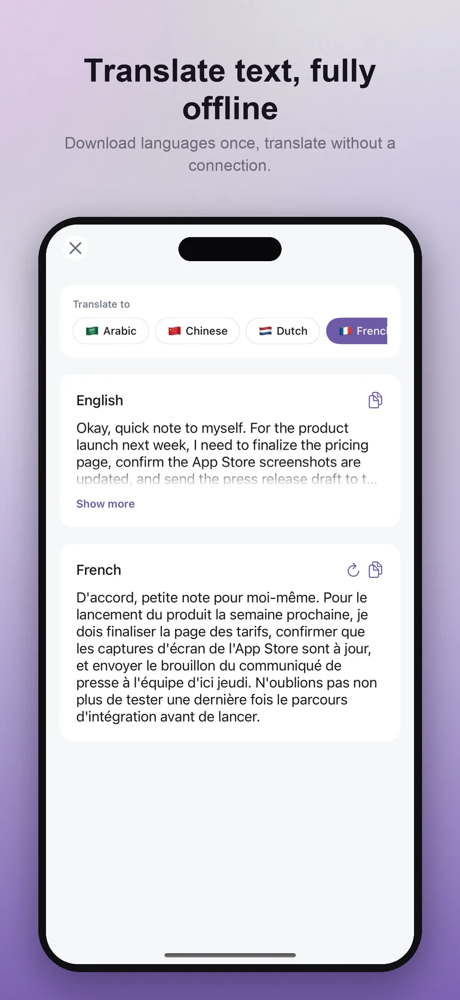
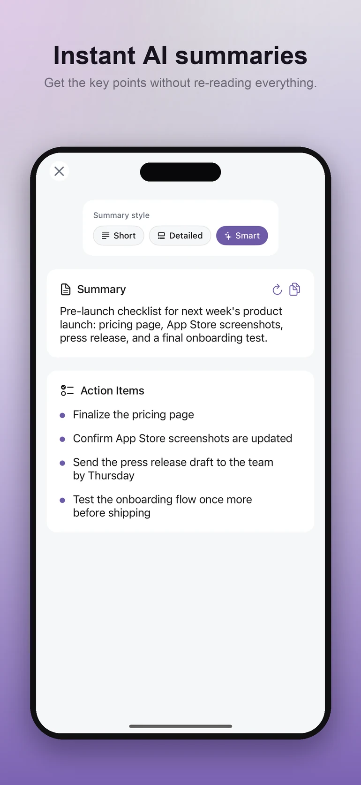
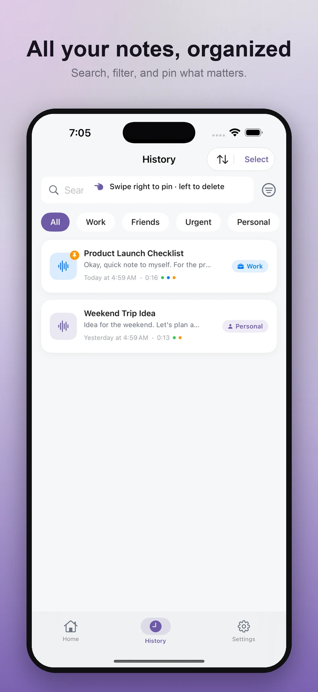
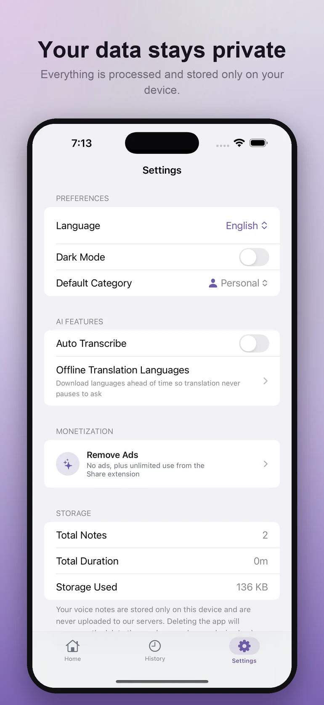

100% on-device · 100% offline
Your voice, your device. Nowhere else.
Record or import audio, then transcribe, translate, and summarize it without an internet connection — your audio and text never leave your iPhone.
No account
No cloud AI
One-time purchase to remove ads
Everything on-device
From audio to action — offline.
Same focused VoiCat experience, powered entirely by Apple's on-device speech, translation, and intelligence frameworks instead of a cloud AI service.





Record or import
Capture a voice note or import audio from WhatsApp, Files, and more — right from the share sheet.
On-device transcription
Apple's Speech framework turns audio into text locally, with no upload step.
On-device translation
Apple's Translation framework translates your text without sending it anywhere.
On-device summaries
Apple Intelligence summarizes long notes locally on compatible devices.
Nothing leaves your device
Transcription, translation, and summaries run with Apple's on-device frameworks — no audio or text is ever sent to a server.
Works with no connection
Airplane mode, no signal, no Wi-Fi — the core AI features keep working either way.
No account, no sign-in
Open the app and start. There's nothing to register and nothing synced to any server.
One-time purchase
Free with ads, or remove them forever with a single one-time purchase — no subscription, ever.
Which one is for you?
VoiCat vs. VoiCat Private.
Both apps share the same focused design. The difference is where the AI processing happens and how you pay for it.
| VoiCat | VoiCat Private | |
|---|---|---|
| AI processing | Cloud (OpenAI) | On-device (Apple) |
| Internet required for AI | Yes | No |
| Pricing | Free tier + subscriptions | Free with ads, or one-time purchase |
| Account required | No | No |
| Summaries | All devices | Apple Intelligence–compatible devices |